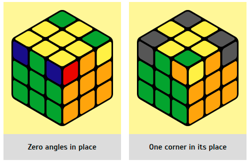

First, you need to check how many corners are in place. It is either all, 1
corner, or none. If all corners are in place, skip this step and move on to the next one. The
corners can be yellow in any direction. The main thing is that the orange-green corner is
between the orange and green centers, the green-red corner is between the green and red, etc. If
there are no such corners, then we do the algorithm:
R U ' L ' U R ' U ' LU
After executing the algorithm, 1 correct corner should appear. We put it on the left and on top
(where the left thumb is) and do the same algorithm. If nothing worked, again put it in the
upper left point and repeat.
Stage 6. Arrangement of corners of the third layer
|  |